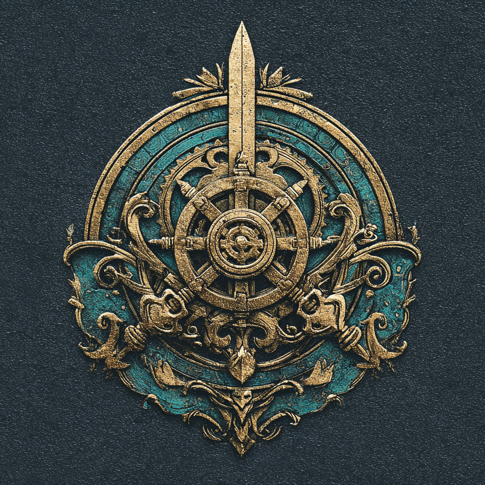
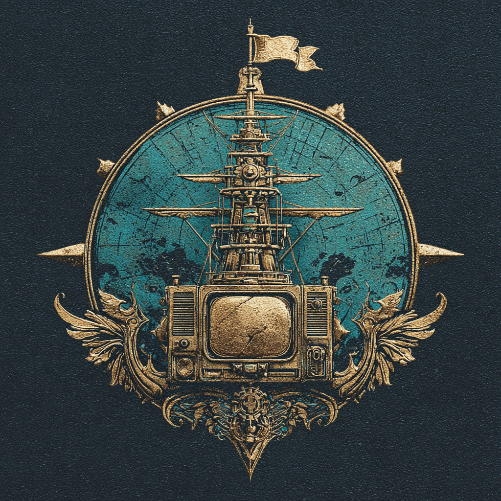
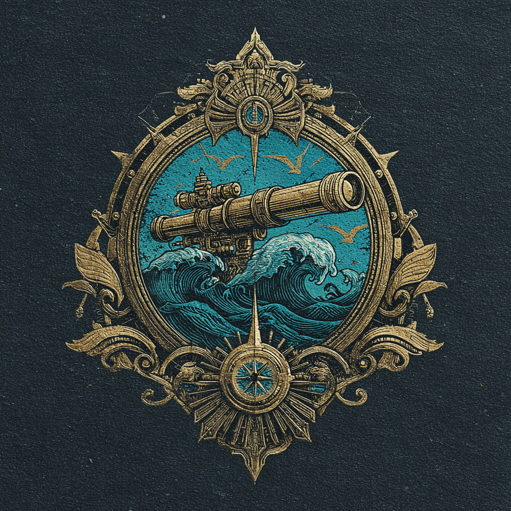

The lesson from the last round: the art and the official logo can't share one little circle — the logo loses. So these three keep the logo big and legible and give the generated art its own space instead of burying it.
Same three services in each. Your generated emblems are used as real images (assets/*.png) — nothing deleted.
Exactly the clean porthole logo you first liked — but the generated pirate scene washes across the whole card behind it, darkened into atmosphere. Logo is front and centre; the art sets the mood without competing.
The generated art gets the whole top of the card like a character portrait; the official logo drops onto the seam as a solid brass badge. Each gets full size — the art is biggest here, the logo unmistakable.
A ship's-log line item: the generated art as a medallion on the left, then the official logo next to the name at readable size. Breaks the square grid entirely — denser, more "roster of the crew".


